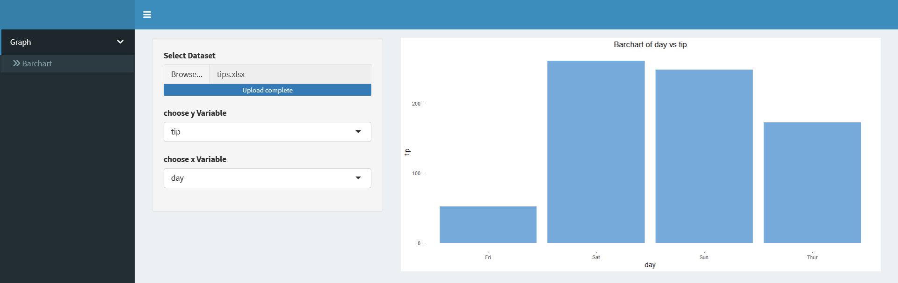

library(shiny)
library(shinydashboard)
library(tools) #to check file extension
library(dplyr) #select_if()
library(readxl)
barchart_ui=fluidPage(
title="barchart",
sidebarLayout(
sidebarPanel(
fileInput(inputId = "file_bar", label = "Select Dataset",
accept = c("text/csv","text/comma-separated-values,text/plain",
".csv",".xlsx"),
buttonLabel = "Browse...",
placeholder = "No file selected"),
selectInput(inputId = "bar_var1_id",
label = "Select y variable",
choices=""),
selectInput(inputId = "bar_var2_id",
label = "Select x variable",
choices="")
),
mainPanel (plotOutput("barchart"))
))
header = dashboardHeader()
sidebar=dashboardSidebar(
sidebarMenu(
id = "tabs",
menuItem("Graph", tabName = "graph",
menuSubItem("Barchart", tabName = "barchart")
)
)
)
body=dashboardBody(
tabItems(
tabItem("barchart",barchart_ui)
)
)
ui = dashboardPage(
title = "Web App With Shiny",
header,
sidebar,
body
)
update_input= function(input_id,label,data){
return(
updateSelectInput(
session = getDefaultReactiveDomain(),
inputId = input_id,
label = label,
choices = names(data()),
selected = NULL
) )
}
server= function(input,output){
data_barchart= reactive({
req(input$file_bar)
file_ext= file_ext(input$file_bar$datapath)
if(file_ext=="xlsx"|file_ext=="xls"){
df=as.data.frame(read_excel(input$file_bar$datapath))
}
else{
df = read.csv(input$file_bar$datapath )
}
return(df)
})
data_bar_numeric=reactive(select_if(data_barchart(), is.numeric))
data_bar_categorical=reactive(select_if(data_barchart(), is.character))
observe(update_input("bar_var1_id","choose y Variable",data_bar_numeric))
observe(update_input("bar_var2_id","choose x Variable",data_bar_categorical))
output$barchart = renderPlot({
y=data_barchart()[,input$bar_var1_id]
x=data_barchart()[,input$bar_var2_id]
ggplot(data=data_barchart(), aes(x=x, y=y)) +
theme(panel.background = element_blank())+
geom_bar(stat="identity",fill="#75AADB" )+
xlab(input$bar_var2_id) +
ylab(input$bar_var1_id) +
ggtitle(paste("Barchart of" ,input$bar_var2_id,"vs",input$bar_var1_id))+
theme(plot.title = element_text(hjust = 0.5))
})
}
shinyApp(ui,server)
